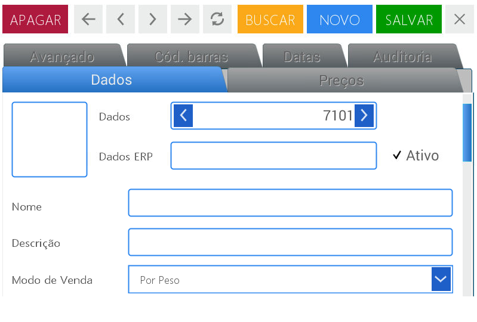
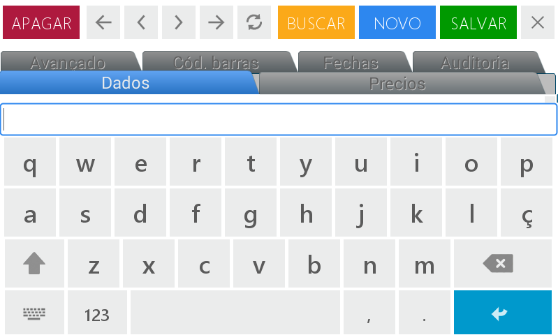
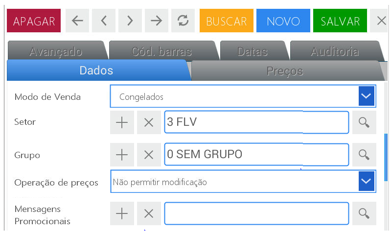

Ações de uso frequente
Antes de começar a descrever como se configura o equipamento, detalharemos alguns procedimentos de uso frequente.
Para utilizar a opção de busca
Pressione a lupa

No menu lateral direito serão visualizados os detalhes da busca efetuada
selecione o item correspondente a busca realizada
Pressione selecionar.
É possível também fazer a busca através da descrição do item.
Neste caso:
Para isso, preencha o campo e em seguida a tecla para visualizar na tela o teclado alfanumérico.
Ao término, pressione Enter.
Ao pressionar o botão buscar, serão exibidas as buscas encontradas referente a palavra chave.

Clique sobre a opção desejada e pressione selecionar.

Para ativar o campo de digitação de busca:
Pressione sobre o campo para habilitar
Pressione a tecla para visualizar o teclado alfanumérico na tela

Pressione qualquer tecla ou a tecla 123 para visualizar o teclado numérico

Pressione Enter para confirmar
Opções do item dentro menu
Pressione a seta posicionada no canto direito do campo. Desta maneira serão mostradas todas as opções pertencentes ao item

Selecione a opção desejada.

Campo com opções (setas)
Para acessar as opções:
Clique sobre as setas localizadas no canto extremo do campo para incrementar o valor (seta para a direita) ou para decrementar (seta esquerda)
Inserir um valor através do teclado numérico:
Pressione o botão para ativar o teclado.
Posicione o cursor no ultimo número do campo ou deslize o cursor com o dedo para selecionar.
Pressione limpar. Insira o valor desejado através do teclado numérico da balança.

SIMBOLO +
Permite acessar os registros já existentes para realizar alguma modificação:
Pressione o simbolo +
Pressione o campo ao qual se deseja alterar para habilitar-lo
Pressione para habilitar o teclado alfanumérico e executar as modificações.
pressione salvar e feche a janela para finalizar.
SIMBOLO X
Permite excluir os dados ou registros selecionados para voltar a realizar uma ação.